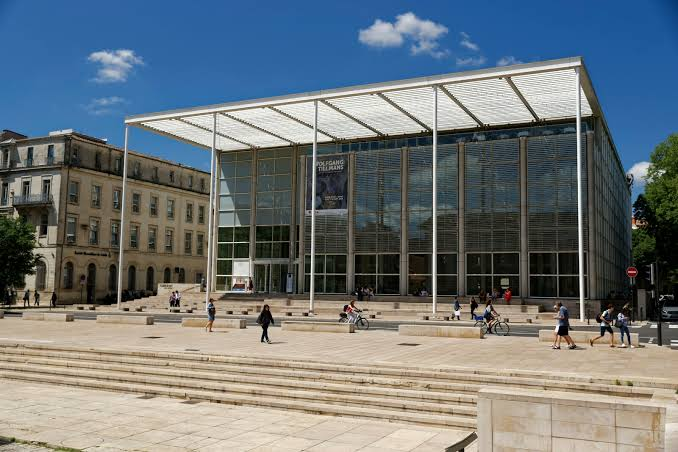

Carré
d’Art


⟹ Musées & découvertes ⟸
Un musée face à la Maison Carrée. Le Carré d’Art a ouvert en 1993 face à la Maison Carrée, au cœur de Nîmes. Il associe un musée d’art contemporain et une médiathèque dans un même bâtiment, dont le nom rappelle celui du temple romain voisin.
La Maison Carrée, un voisin prestigieux. Le Carré d’Art dialogue avec l’un des temples romains les mieux conservés au monde. Élevée au début du Ier siècle et dédiée aux petits-fils d’Auguste, Caius et Lucius César, la Maison Carrée a traversé les siècles en servant tour à tour d’édifice public, d’écurie, d’église et de musée. Elle est inscrite sur la liste du patrimoine mondial de l’UNESCO depuis 2023.
Un temple qui a inspiré le monde. La Maison Carrée a fasciné les voyageurs et les architectes. Selon une tradition souvent rapportée, Colbert aurait songé à la faire démonter pour la transporter à Versailles. Au XVIIIe siècle, Thomas Jefferson, alors ambassadeur en France, s’en inspire directement pour le Capitole de l’État de Virginie, à Richmond.
Le déchiffrement de l’inscription. Au XVIIIe siècle, l’érudit nîmois Jean-François Séguier reconstitue la dédicace de bronze disparue du fronton à partir des seuls trous de fixation des lettres. Cette prouesse permet d’identifier les dédicataires du temple et fait de la Maison Carrée un monument de référence pour les archéologues.

Le souvenir de l’ancien théâtre. L’emplacement était occupé par le théâtre municipal, construit au début du XIXe siècle, dont seule la colonnade subsiste après l’incendie de 1952. Pendant des décennies, cette façade isolée fait face à la Maison Carrée, et la question de l’aménagement de la place reste ouverte.
Un débat passionné. Construire un bâtiment contemporain face à un temple romain ne va pas de soi. Le projet suscite des débats vifs entre partisans d’une architecture résolument moderne et défenseurs d’une place laissée à l’Antiquité. La réponse de Foster, sobre et transparente, cherche à dialoguer avec le monument plutôt qu’à rivaliser avec lui.
Le concours de 1984. Au début des années 1980, la ville de Nîmes, sous l’impulsion du maire Jean Bousquet, décide d’y construire un grand équipement culturel. Le concours international lancé en 1984 réunit plusieurs architectes de renom ; il est remporté par le Britannique Norman Foster.
Nîmes et les grands projets. Maire de 1983 à 1995 et fondateur de la marque Cacharel, Jean Bousquet mène une politique ambitieuse d’architecture et de design. Les immeubles Nemausus de Jean Nouvel (1987), la place d’Assas réaménagée par l’artiste Martial Raysse (1989) ou le mobilier urbain de Philippe Starck s’inscrivent dans ce même élan, dont le Carré d’Art est le projet phare.
Norman Foster, un architecte de renommée mondiale. Architecte britannique né en 1935, Norman Foster s’est fait connaître par des bâtiments de haute technologie mêlant verre et acier. Il reçoit le prix Pritzker en 1999. En Occitanie, son nom reste aussi associé au viaduc de Millau, en Aveyron, inauguré en 2004.
Une architecture de verre et d’acier. Foster conçoit un bâtiment de verre, de béton et d’acier qui reprend, sous une forme contemporaine, le vocabulaire du temple voisin : un portique aux fines colonnes, des proportions mesurées et une grande transparence. Pour ne pas écraser la Maison Carrée, une partie importante du volume est enterrée sur plusieurs niveaux.
Des proportions calculées. La hauteur visible du Carré d’Art est alignée sur celle de la Maison Carrée, et son portique en reprend le rythme sans copier ses colonnes. Des pare-soleil filtrent la lumière méridionale, tandis que les matériaux clairs et le verre reflètent le temple et la place.
Un chantier au cœur de la ville antique. La construction s’étend de la fin des années 1980 au début des années 1990. Creuser plusieurs niveaux de sous-sol au pied d’un temple romain impose des précautions particulières et des fouilles archéologiques préalables. Foster réaménage aussi la place autour de la Maison Carrée, libérée de la circulation et rendue aux piétons.
L’inauguration de 1993. Le Carré d’Art ouvre ses portes au printemps 1993. Son inauguration marque l’aboutissement d’une décennie de projets et fait de Nîmes l’une des villes françaises les plus citées en matière d’architecture contemporaine.
Un atrium de lumière. Au centre du bâtiment, un vaste atrium traversé d’escaliers de verre distribue la lumière naturelle jusqu’aux niveaux inférieurs. La médiathèque et les salles d’exposition s’organisent autour de ce puits de lumière, qui relie les espaces entre eux.
Une médiathèque au cœur du projet. Le Carré d’Art n’est pas seulement un musée : la médiathèque, ouverte à tous, en occupe une part importante. Livres, presse, musique, films et espaces de travail font du bâtiment un lieu fréquenté au quotidien par les Nîmois, bien au-delà des seuls amateurs d’art contemporain.
Une collection née en 1986. La collection, commencée en 1986, rassemble des œuvres de 1960 à nos jours. Elle met en lumière les mouvements artistiques liés au sud de la France, notamment Supports/Surfaces, auquel est associé le peintre nîmois Claude Viallat, ainsi que le Nouveau Réalisme, tout en s’ouvrant largement à la scène internationale.
Les premiers pas de la collection. La constitution de la collection est confiée à Bob Calle, médecin et collectionneur, qui devient le premier directeur du musée. Il oriente les acquisitions vers l’art français des années 1960 à 1980 et vers les grandes figures internationales, posant les bases d’un fonds cohérent.
Des artistes majeurs. Au fil des années, la collection s’enrichit d’œuvres d’artistes liés au Nouveau Réalisme, comme Arman ou Martial Raysse, et de figures de la scène internationale. Les accrochages, renouvelés régulièrement, permettent de faire dialoguer ces œuvres avec les acquisitions plus récentes.
Supports/Surfaces, un mouvement né dans le Sud. Apparu à la fin des années 1960, Supports/Surfaces réunit des artistes, dont Claude Viallat et Daniel Dezeuze, qui interrogent les composantes mêmes de la peinture : la toile libre de tout châssis, le cadre, la couleur, le geste. Le lien du mouvement avec Nîmes et le Languedoc explique la place importante qu’il occupe dans les collections.
Un lieu d’expositions. Le musée organise des expositions temporaires consacrées à des artistes français et étrangers et renouvelle régulièrement la présentation de ses collections. Il est labellisé Musée de France.
Une terrasse sur la ville. Au dernier niveau, un restaurant et sa terrasse offrent l’une des plus belles vues sur la Maison Carrée et les toits du centre historique. Ce point de vue permet de mesurer d’un seul regard le dialogue entre les deux monuments.
Un symbole de Nîmes contemporaine. Avec la place réaménagée par Norman Foster, le Carré d’Art a transformé le cœur de Nîmes. Le face-à-face entre un temple romain du Ier siècle et un bâtiment de la fin du XXe siècle est devenu l’une des images les plus fortes de la ville, qui revendique la devise « Nîmes, l’Antiquité au présent ».
De Foster à Portzamparc. Vingt-cinq ans plus tard, l’ouverture du Musée de la Romanité, face aux arènes, prolonge la même démarche : confier à un grand architecte un bâtiment contemporain placé au contact direct d’un monument antique. Le Carré d’Art en fut le premier et le plus célèbre exemple.